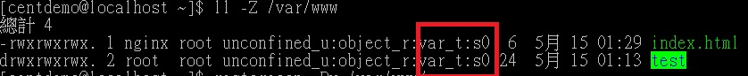
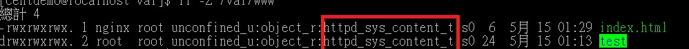

以前都是用 Ubuntu 來架設網站，但安全性相對低一點，所以嘗試用 CentOS 來測試架站。
目前 我已經安裝完成 ssh ，sql serve ,nginx。
在預設的資料夾(/usr/share/nginx/html) 底下是可以執行的。
正題來了
預設資料夾 並不是我理想的資料夾，於是我在 /var 底下建立 www
修改 nginx.conf 的 root 目錄之後，就發現網站會出現 403 forbidden ，查看 erroer.log 之後，發現是權限不足(13 permission denied)
，所以 跑去 將 /var/www 及 檔案 目錄 設定權限，但還是發現 沒有效果。
網路 解法
四種解決Nginx出現403 forbidden 報錯的方法
我沒試過，因為看到要將 user 改成 root 且 SELINUX 要關閉，我就直接放棄使用。
畢竟 我對 SELINUX 不了解，也不知道關閉有何風險。
解法 (我使用的)
上面網址文章內容重點
1 | ll -Z /etc/nginx/conf.d/xxx.conf # 顯示出 [身分識別:角色:type] 的SElinux 訊息，type 最重要，可能會是 "httpd_config_t" |
1 | su - # 進入root身分 |
查看 www 狀態ll -Z /var/www

下完 restorecon -Rv /var/www 之後

然後重整之後 就看到畫面。
應該還有其他設定要處理，但目前尚未研究到就只能等之後了
※ 權限 要改回來，我是為了測試 才將權限開到最高。
之後還有 node.js, php ,net core 等等 都需要嘗試……….